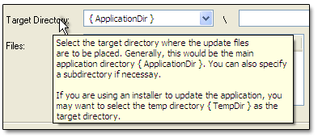

|
Getting Started
NetUpdater (TkmNetUpdate) is the fastest and easiest way to distribute all your software updates. Using a powerful client/server infrastructure, client software can be modified, patched, or completely updated in whatever configuration best suits your requirements. Flexible, secure, and reliable. Net Update is a simple, yet comprehensive software update solution built on trusted, industry-safe Internet and LAN protocols. Installation
NetUpdater (TkmNetUpdate) can be installed into any directory. All the program settings are contained within the installation directory. No files are installed into any of the Windows system directories. This is a source-only release of TkmNetUpdate. It includes designtime and runtime packages for Delphi 6, 7 and 2005. Sources are included so you should easily be able to port it over to Delphi 5 or 2006, if needed. That's it! You're now ready to start creating application updates. Context Sensitive Help  Check out the DEMO PROGRAM to learn how easy it is to to set up application updates. [ Click here for more help on getting started ] Version History -------------------------- TkmNetUpdate for Delphi 6, 7, 2005
|